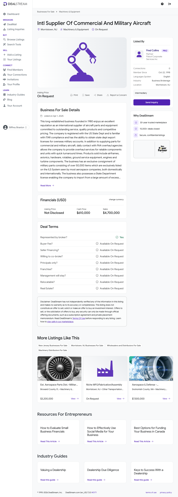

International Supplier of Commercial & Military Aircraft Parts — Prospect Evaluation
Prepared for Biffrey Braxton / EarnedOut ·
2026-05-21 ·
Lead source: DealStream listing fptdcc (broker: Fred Collins, Fidcol Corporate Services Inc)
Buy Box: FAIL
47
Lead Score / 100
Buy Box Screening
#
Criterion
Status
Evidence
1
≥ 10 full-time employees
FAIL
"9 employees including 2 owners" → ~7 non-owner FTE, 9 total. Below the 10-FTE floor.
2
EBITDA ≥ $1M / year
FAIL
Reported Cash Flow (SDE) of $610,000 on $4.7M sales. SDE already below $1M; true EBITDA is lower.
3
10+ years in business
PASS
Founded 1980 → 45 years in business.
4
3+ yrs YoY revenue & profit growth
INSUFFICIENT
Only a single-year snapshot disclosed ($4.7M sales / $610K cash flow). No multi-year trend.
5
Asking price ≤ 4.0x EBITDA
INSUFFICIENT
Asking price "Not Disclosed / On Request" — multiple cannot be computed.
6
DSCR > 1.4 (informational)
INSUFFICIENT
No asking price — debt service cannot be modeled.
Overall Buy Box: FAIL — only 1 of 6 criteria clears. Two hard criteria are missed outright (FTE, EBITDA); three are unevaluable. Lead Score: 47 / 100.
ITAR / DUAL-USE / MILITARY-PARTS FLAG. This is an ITAR-registered distributor of commercial AND military aircraft parts (airframes, avionics, engines, rotable components) — not a weapons manufacturer, so the weapons exclusion does NOT apply and it is treated as an allowed aerospace target. Per the industries-and-geography reference, because of the genuine military / dual-use dimension this aspect is explicitly flagged and the final go/no-go decision is passed to Biffrey Braxton.
Scorecard (26 fields)
#
Field
Value
Source
1
Business Name
International Supplier of Commercial and Military Aircraft Parts (legal name withheld; sold confidentially via Fidcol)
DealStream fptdcc
2
Lead Source
DealStream published listing fptdcc; broker Fred Collins, Fidcol Corporate Services Inc
DealStream
3
Years in business
1980 (45 years)
Listing; Fidcol/BizQuest
4
Real estate owned
$0 — none; operates from ~5,000 sq ft leased space
Listing
5
FF&E value
Not disclosed (50,000+ part consignment is third-party-owned)
Broker follow-up
6
Full-time employees
9 total incl. 2 owners (~7 non-owner FTE)
Listing
7
Part-time employees
Not disclosed
—
8
Contractors / 1099
Not disclosed
—
9
Business address
Morristown, NJ (exact street withheld; broker Fidcol at 20 Community Pl, Morristown, NJ 07960)
Listing; Fidcol
10
Revenue 2022
Not disclosed
—
11
Revenue 2023
Not disclosed
—
12
Revenue 2024
$4,700,000 (most recent "Sales"; year not explicitly stated)
Cannot be computed — only one revenue year disclosed
computed (insufficient data)
20
Yearly revenue retention
Not disclosed
—
21
EBITDA margin
~13% on an SDE basis ($610K ÷ $4.7M); true EBITDA margin lower
computed
22
Customer LTV
left blank — not provided
—
23
Customer CAC
left blank — not provided
—
24
Client concentration
Not disclosed; 200+ active accounts implies diversification but largest-% unconfirmed
Broker follow-up
25
2024 financials + YTD link
Not provided — financials "On Request" from broker
—
26
Lead Score
47 / 100
computed
Score Breakdown
Item
Awarded
Max
Justification
Industry match
20
20
Aerospace is EarnedOut's TOP-PRIORITY industry. Aircraft parts/equipment distributor with rotable overhaul services — squarely in-target. Not a weapons manufacturer.
Insufficient data — only a single-year snapshot. Unevaluable item awarded 0.
Recurring revenue
5
10
Transactional parts distribution; 200+ accounts and exclusive ILS consignment imply repeat-not-contracted business — mixed = 5 pts.
Customer concentration <20%
0
5
Insufficient data — largest-customer % not disclosed. Not awarded.
Employees ≥10
0
10
9 total incl. 2 owners (~7 non-owner FTE). Below the floor. 0 pts.
Valuation multiple
7
15
Asking price undisclosed — multiple cannot be computed. Neutral 7-pt placeholder; memo flags "negotiate to ≤4.0x EBITDA".
Low owner dependence
0
5
2 of 9 employees are owners; owner-operated with high key-person dependence, no disclosed GM. 0 pts.
Roll-up / add-on strategic fit (BONUS)
0
10
N/A — standalone aerospace target, not an Applied Development or Fambro Waste add-on.
Total
47
100
The 7-pt valuation award is a placeholder pending the broker's price. If the price exceeds 5.5x EBITDA the line drops to 0 (score → 40); at ≤4.0x it rises to 15 (score → 55). The deal stays below the 70+ pursue threshold either way. Negotiate to ≤4.0x EBITDA as a closing condition.
1. Executive Summary
Company overview: A confidentially-marketed, Morristown NJ-based international distributor of commercial and military aircraft parts and equipment, founded 1980 (45 years). ITAR-registered with the US State Department; sells airframes, avionics, hardware, rotables, ground service equipment, engines and turbine components, and provides overhaul services for rotable components.
Buy Box summary: FAIL — 1 of 6 criteria clears. Sub-scale on the two hard, non-negotiable criteria: fewer than 10 FTE and SDE below the $1M EBITDA floor.
Why pursue (or not): Against — misses the EBITDA and employee floors; owner-operated 9-person shop. For — genuine top-priority industry fit, a hard-to-replicate exclusive 50,000+ part military consignment on the ILS System, State Dept export/import licenses, 45-year history, 200+ accounts. Net — not actionable as a standalone EarnedOut buy; keep on file as a potential bolt-on for a larger aerospace-distribution platform.
2. Company Overview
Background and history: Founded in 1980, operating 45 years as an international supplier of commercial and military aircraft parts and equipment with an excellent reputation for service, quality and competitive pricing. Sold confidentially through Fidcol Corporate Services Inc, a Morristown M&A boutique founded 1984 specializing in privately held companies under ~$40–50M.
Ownership structure: Closely held; 2 of the 9 employees are owners. Legal entity name withheld pending NDA. Run as a retirement / ownership-transition transaction.
Key milestones: 1980 — founded. Over time — obtained US State Department / ITAR registration and export-license capability; won an exclusive consignment of 50,000+ military parts on the ILS System; obtained a State Department license to import excess military parts from a close US ally. 2025-04-01 — listed for sale on DealStream via Fidcol.
Organizational structure: 9-person organization, 2 owners actively involved. No independent GM or second-in-command disclosed; day-to-day operation appears owner-dependent.

3. Principals & Leadership
The selling principals are not named in the confidential listing. The transaction is intermediated by the broker below.
Fred (Frederick B.) Collins — Partner, Fidcol Corporate Services Inc (broker, not a target principal)
Role: Listing broker / M&A advisor representing the seller. Background: Co-founded Fidcol Corporate Services Inc in 1984 with John Fiddes; firm specializes in privately held middle-market companies (~$1–40M) and reports 100+ closed transactions; member, MidMarket Alliance.
Open item: Identity, age and post-sale intentions of the 2 owner-principals are unknown — request on the first broker call. Their continued involvement (or a transition plan) is material given the small headcount.
4. Products & Services
Descriptions: Distribution of commercial and military aircraft parts and equipment — airframes, avionics, hardware, rotables, ground service equipment, engines and turbine components — to 200+ active accounts (airlines, governments, militaries, overhaul facilities, domestic and international). Also provides overhaul services for rotable components, a light value-add layer on top of distribution.
Pricing model: Transactional per-unit parts sales (margin on inventory and consignment) plus fees for rotable-component overhaul. No contracted/subscription revenue disclosed.
Competitive differentiators: Exclusive consignment of 50,000+ military parts listed on the ILS (Inventory Locator Service) System — visible to most of the global aerospace buying community and hard to replicate; ITAR registration plus the ability to obtain State Department export licenses — a regulatory moat; a State Department license to import excess military parts from a close US ally — a differentiated licensed supply channel; a 45-year reputation and 200+ accounts.
5. Market Analysis
Industry size and trends: US aircraft parts distribution is a multi-billion-dollar, fragmented market. Aerospace aftermarket demand has been strong post-pandemic on high fleet utilization, constrained new-aircraft deliveries keeping older airframes flying, and sustained military sustainment spending. Aerospace valuation multiples have risen steadily since 2024.
Drivers and barriers: Drivers — aging global fleets, MRO backlogs, ITAR/export-licensed niches with high entry barriers, military sustainment budgets. Barriers — inventory working-capital intensity, OEM channel control, parts traceability/airworthiness documentation, cyclicality tied to airline capex and defense appropriations.
Competitive landscape:
AAR Corp — large public aerospace distributor/MRO; acquired ADI (Aerospace) Sept 2025 for $146M on ~$149M revenue / $15.2M EBITDA — an implied ~9.6x EBITDA multiple at scale.
VSE Corp (VSE Aviation) — public aviation distribution/repair consolidator; acquired Kellstrom Aerospace and Turbine Weld; ~$1.1B 2025 revenue. Confirms an active roll-up market.
Small private aircraft-parts distributors — niche shops typically transact at low single-digit SDE multiples (~2–3x SDE for sub-$1M-earnings businesses), well below scaled platforms. This target sits firmly in the small-private tier.
6. Customers & Revenue Model
Customer segments: B2B only — airlines, governments, militaries, overhaul/MRO facilities, domestic and international. 200+ active accounts.
Retention rates: Not disclosed.
Recurring vs one-time: No contracted/recurring revenue disclosed. Revenue is transactional parts sales plus overhaul fees; a 200+ account base and exclusive ILS consignment imply substantial repeat ordering, but it is repeat-not-contracted rather than true recurring revenue.
Top customer concentration: Not disclosed. 200+ accounts suggests reasonable diversification, but the largest-customer and top-5 percentages must be confirmed with the broker before any concentration credit can be given.
7. Financial Analysis
Year
Revenue
EBITDA
Margin
YoY
2022
Not disclosed
Not disclosed
—
—
2023
Not disclosed
Not disclosed
—
—
2024
$4,700,000
SDE $610,000 (true EBITDA not disclosed)
~13% (SDE basis)
—
2025 (annualized)
Not disclosed
Not disclosed
—
—
Revenue trajectory
Estimated valuation
Implied multiple at ask: Cannot be computed — asking price "On Request" / undisclosed. Comparable multiples: scaled public deals ~8–10x EBITDA (AAR/ADI ~9.6x); small private aircraft-parts distributors typically ~2–3x SDE. At a 2.5–3x SDE benchmark on $610K SDE, an indicative enterprise value frame is roughly $1.5–1.8M — a comp frame only, not a quote. Because EBITDA itself is below the $1M Buy Box floor, the deal does not clear on size regardless of price. Biffrey's ceiling is 4.0x EBITDA with negotiation tolerance to 5.5x — negotiate to ≤4.0x as a closing condition.
8. SWOT Analysis
Strengths
45-year operating history; established reputation.
Exclusive 50,000+ part military consignment on the ILS System — hard-to-replicate asset.
ITAR registration + State Dept export/import licenses — regulatory moat.
200+ diversified active accounts across commercial and military.
Weaknesses
SDE ($610K) below the $1M EBITDA Buy Box floor.
Only 9 employees (2 owners) — below the 10-FTE floor; thin bench.
Owner-operated; no disclosed GM / second-in-command.
No multi-year financials or asking price disclosed; transactional (non-recurring) revenue.
Opportunities
Attractive bolt-on for a larger aerospace-distribution platform (VSE/AAR-style consolidation is active).
Working-capital and pricing optimization on consignment inventory.
Cross-sell overhaul services into the 200+ account base.
Threats
Aerospace cyclicality tied to airline capex and defense appropriations.
ITAR change-of-control: any sale triggers DDTC notification/re-registration; foreign-buyer scenarios add 60-day DDTC notice + possible CFIUS filing.
Consignment is a third-party relationship — could be lost on a change of control if not assignable.
Key-person risk: loss of the 2 owners could impair licenses and relationships.
9. Risk Factors
Industry: Aerospace demand is cyclical and exposed to airline capital spending and defense appropriations. Parts traceability and airworthiness documentation are compliance-critical.
Financial: SDE below the $1M floor; no multi-year trend disclosed, so growth/decline is unknown. Distribution is working-capital intensive. Largest-customer concentration is undisclosed.
Operational: Small 9-person shop with 2 owner-operators and no disclosed GM — high key-person dependence. The exclusive 50,000-part consignment is a third-party arrangement that may not survive a change of control unless contractually assignable.
Regulatory / legal — ITAR / DUAL-USE / MILITARY-PARTS FLAG (decision passed to the user): This is an ITAR-registered distributor of commercial AND military aircraft parts (airframes, avionics, engines, rotable components) holding State Department export and import licenses. It is NOT a weapons manufacturer — no firearms, ammunition, explosives, or missile-guidance/targeting systems — so the EarnedOut weapons-manufacturer exclusion does NOT apply and it is treated as an allowed aerospace target. However, per the industries-and-geography reference, because the business has a genuine military / dual-use dimension, this aspect is explicitly flagged and the final go/no-go decision is passed to Biffrey Braxton. Practical ITAR consequences: any change of control requires notification to the State Department's DDTC and updating of the ITAR registration (material-change notice within 5 days via DECCS); a sale to any foreign person/entity requires a 60-day advance DDTC notification and may trigger a mandatory CFIUS filing. The export/import licenses and the ILS consignment must be confirmed transferable/assignable to the buyer.
Deal conditions: (1) Obtain the actual asking price and a normalized EBITDA bridge from the $610K SDE — negotiate to ≤4.0x EBITDA. (2) Confirm assignability of the ITAR registration, State Department licenses and the 50,000-part consignment on change of control. (3) Confirm the owners' transition plan given the 9-person headcount. (4) Obtain trailing-3-year financials to assess the growth criterion.
10. Outlook & Growth Opportunities
Expansion potential: Geographic — deepen overseas military accounts under existing export-license capability. Service-line — grow rotable-component overhaul as a higher-margin attach to distribution.
Operational upside: Install proper processes/systems (EOS-style), professionalize inventory and pricing on consignment stock, and recruit a GM to reduce owner dependence — standard EarnedOut value-add levers, though they presuppose the size thresholds were met.
Strategic opportunities: The clearest path is as a bolt-on / tuck-in for a larger aerospace-distribution platform. The ITAR licenses and exclusive 50,000-part ILS consignment are strategically valuable to a consolidator; sub-scale headcount and earnings matter far less in an add-on context. Active consolidators (VSE, AAR) confirm a live market for this profile.
100-day plan sketch (if pursued as an add-on, not standalone): (1) Close ITAR change-of-control — file DDTC material-change notice, confirm registration/license continuity. (2) Lock down the consignment contract — confirm assignability and renewal terms. (3) Retain the 2 owners on a 6–12 month transition; identify/hire a GM. (4) Integrate inventory and account data into the platform's ILS/ERP. (5) Map the 200+ accounts for cross-sell of platform parts and overhaul capacity.
11. Appendix
A. Data sources
dealstream.com/d/biz-sale/machinery-distrib/fptdcc — primary listing (fptdcc); business description, $4.7M sales, $610K cash flow, 9 employees, ~5,000 sq ft leased, founded 1980, 200+ accounts, ITAR/consignment details.
fidcol.com / about-us — broker firm profile; Fidcol founded 1984 by Fred Collins & John Fiddes; middle-market mandate; 100+ closed transactions.
BizQuest broker profile BW5674 — confirms Fidcol represents an aircraft-parts business founded 1980 with the 50,000+ part ILS consignment.
Non-owner FTE estimated at ~7 by subtracting the 2 owners from the stated 9 employees. The "9 total" reading also fails the 10-FTE floor — conclusion unchanged.
"Revenue 2024" assigns the listing's single "$4,700,000 Sales" figure to 2024 as the most recent full year; the listing does not state the fiscal year. No multi-year series was fabricated.
The $1.5–1.8M indicative EV frame uses a 2.5–3x SDE benchmark for small private aircraft-parts distributors from market commentary on aviation listings. Comp frame only, not a quote; not used as a scorecard value.
C. Estimation calculations
No financial scorecard fields are marked (est.) — actual broker-disclosed figures ($4.7M sales, $610K cash flow) were used and no missing financials were estimated. Derived figures only:
Field #21 — EBITDA margin. $610,000 SDE ÷ $4,700,000 sales = 12.98% ≈ 13% on an SDE/cash-flow basis. Noted as SDE-basis, not true EBITDA. Field #3 — Years in business. 2025 reference year minus 1980 founding = 45 years. Founding year confirmed by listing and Fidcol/BizQuest materials; not an estimate.
D. Documents reviewed
output/screenshots/fptdcc.png — saved DealStream listing screenshot (copied into this report folder as fptdcc.png).
DealStream listing fptdcc text (provided by the pipeline) — primary structured facts.
E. Open questions for the seller / broker
What is the asking price, and what does the $610K "Cash Flow" represent (SDE vs. EBITDA)? Request a normalized EBITDA bridge.
Trailing-3-year and trailing-12 P&L — is revenue and profit growing, flat, or declining?
Largest-customer and top-5 customer concentration percentages.
Are the ITAR registration, State Department export/import licenses, and the exclusive 50,000-part ILS consignment assignable/transferable on a change of control?
Who are the 2 owners, and what is their post-sale transition plan? Is there a GM or designated successor?
Value of FF&E and any owned inventory (vs. third-party consignment).